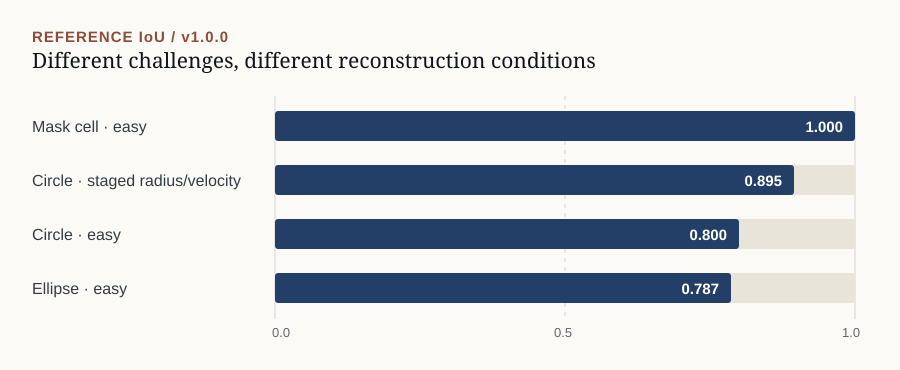

01
Inverse problems · PDE simulation · Devito
WaveSleuth-Devito
Inverse Wave Playground v1.0
I built WaveSleuth to learn Devito by implementing an inverse problem from start to finish. A 2D acoustic model generates traces from a hidden medium, and the inversion tries to reconstruct it from sparse observations. The v1 release adds blind challenges, scoring, and checks that the results can be reproduced.
- Inside it
- Several acquisition geometries, a real Devito forward model, simple inversion baselines, blind challenges, active sensing, uncertainty summaries, scoring, and release checks.
- Scope
- A 2D constant-density acoustic testbed, not field-scale seismic imaging. The inversions are deliberately constrained so experiments can be reproduced and inspected.
1 hidden medium→2 sparse traces→3 invert→4 reconstruct + score
This is the v1.0 workflow. The small number of sources and receivers leaves room for ambiguous reconstructions.
Release evidence / reference reconstruction IoU (v1.0.0)
mask-cell-easy1.000 IoUcircle + radius/velocity0.895 IoUcircle-easy0.800 IoUellipse-easy0.787 IoU
